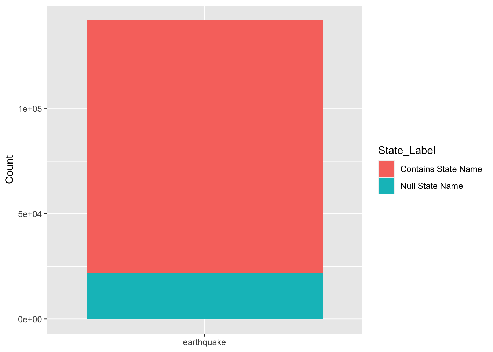

With these questions in mind, the bulk of our work will use the USGS earthquake data set here. This is because this data set contains an abundance of information about earthquakes including but not limited to: latitude, longitude, depth,time, place etc. You can find a legend of the full dataset here. Diving into the actual data set itself, each row represents one earthquake that occurred on a particular day/time. The information within the time field is extremely granular (to the exact second) and therefore if no other fields can be joined between this table and another, we can opt to join on time/day.
While the data appears to be clean overall, there are some drawbacks. For one, the ‘place’ attribute appears to have an unorthodox format. In other words, it is not does not have a consistent format. While some fields include only the name of the actual region where the earthquake occurred, others include the kilometer information. This makes it hard to join on this dataset on the field ‘place.’
This data is very reputable as it comes from national agencies. To be specific, this source (USGS) is part of the National Earthquake Hazards Reduction Program, which is led by the National Institute of Standards and Technologies. Their goals align with the goals of our project:
Improve earthquake hazard identification and risk assessment methods and their use;
Maintain and improve comprehensive earthquake monitoring in the United States with focus on “real-time” systems in urban areas;
Improve the understanding of earthquakes occurrence and their effects and consequences
2.1.2 Overview of data source 2:
To answer the question regarding Demographics, we’ll need a dataset that describes the populations of each area in question.To make things simpler, we will focus on states as areas.
The data will describe the population in each state within the USA from 2010 to 2019. We’ve limited the scope of the years as we believe we would otherwise have too much information. This data set can be accessed here. The data set is pretty straight forward, containing a state and its populations from 2010 to 2019. It was presented by the United States Census Bureau— an entity that aims to serve as the nation’s leading provider of quality data about its people and the economy.
Note this data set will solely be used to find the populations of each state. The point here is that we can then leverage another table from USGS which displays the earthquakes per state. We can then join the population and earthquake table on state and time yielding a new table that contains the earthquakes per state and year. Furthermore this provides a powerful tool, we can not only see the distribution of earthquakes per state, but also how this distribution has changed over time.
2.2 Research Plan
The primary dataset is of earthquakes of magnitude 7+ from the USGS Earthquakes Hazards Lists and Maps. With this data, we seek to answer each research question using the following aspects of the data.
What is the distribution of earthquakes on land versus in the ocean?
Leveraging the latitude and longitude columns for epicenter location, we can use the sf package to categorize earthquakes as occurring on land or in the ocean. This additional column aids in examining the distribution of earthquakes over time and facilitates visualizing differences in magnitudes through a comparative boxplot for land and ocean locations.
Are there discernible patterns in the time series of earthquakes, indicating seasonality or other temporal trends?
Using the time column, which spans from 1905 to 2023 and includes UTC time up to the millisecond level of occurrence, we can plot major earthquakes against their respective time. Our goal is to identify any seasonality in the data, determine which year experienced the highest frequency of major earthquakes, and explore monthly patterns in earthquake occurrences.
How close do earthquakes occur to population and city centers?
Similar to our inquiry about proximity to fault lines, we aim to investigate the relationship between earthquake occurrence and population centers in the U.S. To achieve this, we will merge two datasets based on cities – one containing population data as of 2023 and the other detailing earthquakes by city in the United States. We anticipate exploring trends at both the national and state levels, with the hope of uncovering any correlations or trends, such as a potential negative correlation between earthquake occurrence and population size.
2.3 Missing value analysis
From the USGS Earthquakes Hazards Lists, we note that this data contains all Magnitude 7+ earthquakes that occurred in the world from 1900. The graph below shows the number of missing columns in our data. Given that we will only be using latitude,longitude, and mag, our dataset of interest has no missing values.
From the USGS Earthquakes by State List, the earthquake table does not actually have the name of the states within it - rather only their longitude and latitude. To get state names, we merge a shape file containing US State Boundaries as of 2018 produced by the United States Census Bureau with the earthquake data. We plot the map of earthquakes that are outside of the contiguous United States below which are depicted as null values. These arise as missing data due to the structure of the shape file geometries as the earthquakes occur outside the predefined geometries, and so do not contain a state name. These are useful as we can see they occur near the coasts of California, Alaska, Hawaii, and Canada.
We’ve decided to drop these records as they only comprise 15% of our data, and are not significantly detracting from our purpose of analyzing population vs earthquakes.
Code
earthquakes_by_state_df <- earthquakes_by_state %>%st_drop_geometry() earthquakes_by_state_df %>%mutate(State_Label =ifelse(is.na(NAME), "Null State Name", 'Contains State Name'), earthquake="earthquake") %>%ggplot() +geom_bar(aes(x=earthquake, fill=State_Label), position="stack") +xlab(NULL) +ylab("Count")

Finally, for the population data, after some pre-cleaning on the Excel file, we note that there are no missing values for the years available between 2010-2019